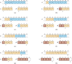
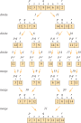

(38.9076, -77.0723)Week 3: Data Structures and Computational Complexity
DSAN 5500: Data Structures, Objects, and Algorithms in Python
Jeff Jacobs
Thursday, January 23, 2025
Schedule
Today’s Planned Schedule:
| Start | End | Topic | |
|---|---|---|---|
| Lecture | 6:30pm | 6:40pm | TA Intros! |
| 6:40pm | 7:00pm | Python’s Built-In Data Structures → | |
| 7:00pm | 7:30pm | Big-O Notation and Complexity Classes | |
| 7:30pm | 8:00pm | Formal Complexity Analysis: Insertion-Sort → | |
| Break! | 8:00pm | 8:10pm | |
| 8:10pm | 8:30pm | Formal Complexity Analysis: Merge-Sort → | |
| 8:30pm | 9:00pm | Object-Oriented Programming → |
TA Intros!
- Renee DeMaio
jrd154@georgetown.edu - Jiatong Liu
jl3081@georgetown.edu
Why Can’t We Learn Data Structures and Algorithms Separately?
- Data Structure Choice \(\Leftrightarrow\) Algorithmic Efficiency for Task
- Question: “Is this algorithm efficient?”
- Answer: “…Efficient for what?”
- Do we need to be able to insert quickly?
- Do we need to be able to sort quickly?
- Do we need to be able to search quickly?
- Are we searching for individual items or for ranges?
Basic Data Structures
Recall: Primitives
boolintfloatNone- Now we want to put these together, to form‚Ķ structures! üëÄ
- Structures are the things that live in the heap; the stack just points to them
Tuples
Fixed-size collection of \(N\) objects
Unless otherwise specified, we’re talking about \(2\)-tuples
Example: We can locate something on the Earth by specifying two
floats: latitude and longitude!But what if we don’t know in advance how many items we want to store? Ex: how can we store users for a new app?
Sequences
- In General: Mapping of integer indices to objects
x = ['a','b','c']- \(\implies\)
x[0] = 'a' - \(\implies\)
x[1] = 'b' - \(\implies\)
x[2] = 'c'
- \(\implies\)
- In Python:
list - Nice built-in language constructs for looping over lists, and especially for performing operations on each element
Looping Over Sequences
List Comprehensions: Apply [Operation] to Each Element
Construct new list by applying operation to each element:
Can also filter the elements of the list with
if:
Sets
Efficient for finding unique elements:
prefs_morn = [
'None','None','None','Vegan','Vegan','None',
'Gluten Free'
]
print(f"Number of responses: {len(prefs_morn)}")Number of responses: 7unique_prefs_morn = set(prefs_morn)
print(f"Unique preferences: {unique_prefs_morn}")
print(f"Number of unique preferences: {len(unique_prefs_morn)}")Unique preferences: {'None', 'Vegan', 'Gluten Free'}
Number of unique preferences: 3Ordering / indexing of elements is gone!
--------------------------------------------------------------------------- TypeError Traceback (most recent call last) Cell In[7], line 1 ----> 1 unique_prefs_morn[2] TypeError: 'set' object is not subscriptable
But, supports set operators from math! →
Union (\(M \cup E\)):
prefs_eve = [
'None','None','Vegan','None','None'
]
unique_prefs_eve = set(prefs_eve)
unique_prefs_either = unique_prefs_morn.union(unique_prefs_eve)
print(f"Preferences in either event: {unique_prefs_either}")Preferences in either event: {'Vegan', 'None', 'Gluten Free'}Intersection (\(M \cap E\)):
unique_prefs_both = unique_prefs_morn.intersection(unique_prefs_eve)
print(f"Preferences in both events: {unique_prefs_both}")Preferences in both events: {'None', 'Vegan'}Set Difference (\(M \setminus E\) or \(E \setminus M\)):
unique_prefs_mornonly = unique_prefs_morn - unique_prefs_eve
print(f"Preferences only in the morning: {unique_prefs_mornonly}")
unique_prefs_eveonly = unique_prefs_eve - unique_prefs_morn
print(f"Preferences only in the evening: {unique_prefs_eveonly}")Preferences only in the morning: {'Gluten Free'}
Preferences only in the evening: set()Maps / Dictionaries
While other language like Java have lots of fancy types of Map, Python has a single type, the dictionary:
Code
dict_keys(['name', 'founded', 'coordinates', 'location'])
dict_values(['Georgetown University', 1789, (38.9076, -77.0723), {'city': 'Washington', 'state': 'DC', 'country': 'USA'}])Be careful when looping! Default behavior is iteration over keys:
For key-value pairs use .items():
Complexity With Respect To A Structure
Last week: analyzing complexity of an algorithm (no broader context): Insertion-Sort
This week: analyzing complexity of a structure as a collection of variables + algorithms
Example:
tuple- Variables: Constant
N, pre-allocatedlistwithNslots - Algorithms: Constant-time Get-Item-At-Index ü§Ø, but no Insert-New üòî
- Variables: Constant
OOP: Design pattern for “organizing” data and algorithms into structures
Code
class MyNTuple(): def __init__(self, N, item_list): if len(item_list) != N: raise Exception("Must have exactly N elements") self.N = N self.contents = item_list def item_at_index(self, i): return self.contents[i] jeffs_location = MyNTuple(2, [-40, 40]) print(jeffs_location.item_at_index(0)) print(f"{jeffs_location} üßê")-40 <__main__.MyNTuple object at 0x164f757d0> üßê
Looking Under the Hood of a Data Structure
- Last week we saw the math for why we can “abstract away from” the details of how a particular language works
- We want to understand these structures independently of the specifics of their implementation in Python (for now)
- So, let’s construct our own simplified versions of the basic structures, and use these simplified versions to get a sense for their efficiency
- (The “true” Python versions may be hyper-optimized but, as we’ll see, there are fundamental constraints on runtime, assuming \(P \neq NP\))
Tuples
Lists
The list itself just points to a root item:
An item has contents, pointer to next item:
Code
class MyListItem:
def __init__(self, content):
self.content = content
self.next = None
def append(self, new_item):
if self.next is None:
self.next = MyListItem(new_item)
else:
self.next.append(new_item)
def __repr__(self):
my_content = self.content
return my_content if self.next is None else f"{my_content}, {self.next.__repr__()}"So, How Many “Steps” Are Required…
- To retrieve the first element in a
MyTuple? - To retrieve the last element in a
MyTuple? - To retrieve the first element in a
MyList? - To retrieve the last element in a
MyList?
How Many Steps?
With a MyList:
\(\implies\) 1 step
Code
Bo\(\implies\) (3 steps)
…But why 3? How many steps if the list contained 5 elements? \(N\) elements?
Pairwise-Concatenating List Elements
Now rather than just printing, let’s pairwise concatenate:
Code
JeffJeff JeffAlma JeffBo AlmaJeff AlmaAlma AlmaBo BoJeff BoAlma BoBoHow many steps did this take? How about for a list with \(5\) elements? \(N\) elements?
Last Example: Pairwise-Concat + End Check
Code
printed_items = []
cur_pointer1 = users.root
while cur_pointer1 is not None:
cur_pointer2 = users.root
while cur_pointer2 is not None:
print(cur_pointer1.content + cur_pointer2.content)
printed_items.append(cur_pointer1.content)
printed_items.append(cur_pointer2.content)
cur_pointer2 = cur_pointer2.next
cur_pointer1 = cur_pointer1.next
check_pointer = users.root
while check_pointer is not None:
if check_pointer.content in printed_items:
print(f"Phew. {check_pointer.content} printed at least once.")
else:
print(f"Oh no! {check_pointer.content} was never printed!!!")
check_pointer = check_pointer.nextJeffJeff
JeffAlma
JeffBo
AlmaJeff
AlmaAlma
AlmaBo
BoJeff
BoAlma
BoBo
Phew. Jeff printed at least once.
Phew. Alma printed at least once.
Phew. Bo printed at least once.Generalizing
- Algorithms are “efficient” relative to how their runtime scales as the objects grow larger and larger!
- Tuple operations take 1 step no matter what
- For lists, retrieving the first element takes 1 step no matter what, but retrieving the last element takes \(n\) steps!
- Pairwise concatenation requires \(n^2\) steps!
The Complexity of Our Examples
- Tuple operations: \(O(1)\)
- Retrieving the first element of a list: \(O(1)\)
- Retrieving the last element of a list: \(O(n)\)
- Pairwise concatenation: \(O(n^2)\)
- Pairwise concatenation+check: \(O(n^2 + n) = O(n^2) \leftarrow !!\)
- Crucial to think asymptotically to wrap our heads around this!
Back to Insertion-Sort

Complexity Analysis
- Let \(t_i\) be the number of times the while loop runs, \(\widetilde{n} = n - 1\):
| Code | Cost | Times Run | |
|---|---|---|---|
| 1 | for i = 1 to n-1: |
\(c_1\) | \(\widetilde{n}\) |
| 2 | key = A[i] |
\(c_2\) | \(\widetilde{n}\) |
| 3 | # Insert A[i] into sorted subarray A[0:i-1] |
\(0\) | \(\widetilde{n}\) |
| 4 | j = i - 1 |
\(c_4\) | \(\widetilde{n}\) |
| 5 | while j >= 0 and A[j] > key: |
\(c_5\) | \(\sum_{i=2}^n t_i\) |
| 6 | A[j + 1] = A[j] |
\(c_6\) | \(\sum_{i=2}^n(t_i - 1)\) |
| 7 | j = j - 1 |
\(c_7\) | \(\sum_{i=2}^n(t_i - 1)\) |
| 8 | A[j + 1] = key |
\(c_8\) | \(\widetilde{n}\) |
\[ T(n) = c_1\widetilde{n} + c_2\widetilde{n} + c_4\widetilde{n} + c_5\sum_{i=2}^nt_i + c_6\sum_{i=2}^n(t_i - 1) + c_7\sum_{i=2}^n(t_i-1) + c_8\widetilde{n} \]
Simplifying
- The original, scary-looking equation:
\[ T(n) = c_1n + c_2\widetilde{n} + c_4\widetilde{n} + c_5{\color{orange}\boxed{\color{black}\sum_{i=2}^nt_i}} + c_6{\color{lightblue}\boxed{\color{black}\sum_{i=2}^n(t_i - 1)}} + c_7{\color{lightblue}\boxed{\color{black}\sum_{i=2}^n(t_i-1)}} + c_8\widetilde{n} \]
- But \(\sum_{i=1}^ni = \frac{n(n+1)}{2}\), so:
\[ \begin{align*} {\color{orange}\boxed{\color{black}\sum_{i=2}^ni}} &= \sum_{i=1}^ni - \sum_{i=1}^1i = \frac{n(n+1)}{2} - 1 \\ {\color{lightblue}\boxed{\color{black}\sum_{i=2}^n(i-1)}} &= \sum_{i=1}^{n-1}i = \frac{(n-1)(n-1+1)}{2} = \frac{n(n-1)}{2} \end{align*} \]
- And the scary-looking equation simplifies to
\[ \begin{align*} T(n) = &{\color{gray}\left(\frac{c_5}{2} + \frac{c_6}{2} + \frac{c_7}{2}\right)}{\color{green}n^2} + {\color{gray}\left(c_1 + c_2 + c_4 + \frac{c_5}{2} - \frac{c_6}{2} - \frac{c_7}{2} + c_8\right)}{\color{green}n^1} \\ \phantom{T(n) = }& - {\color{gray}(c_2 + c_4 + c_5 + c_8)}{\color{green}n^0} \end{align*} \]
Remember: Asymptotic Analysis!
- It still looks pretty messy, but remember: we care about efficiency as a function of \(n\)!
\[ \begin{align*} T(n) = &\underbrace{{\color{gray}\left(\frac{c_5}{2} + \frac{c_6}{2} + \frac{c_7}{2}\right)}}_{\text{Constant}}\underbrace{\phantom{(}{\color{green}n^2}\phantom{)}}_{\text{Quadratic}} \\ \phantom{T(n) = }&+ \underbrace{{\color{gray}\left(c_1 + c_2 + c_4 + \frac{c_5}{2} - \frac{c_6}{2} - \frac{c_7}{2} + c_8\right)}}_{\text{Constant}}\underbrace{\phantom{(}{\color{green}n^1}\phantom{)}}_{\text{Linear}} \\ \phantom{T(n) = }& - \underbrace{{\color{gray}(c_2 + c_4 + c_5 + c_8)}}_{\text{Constant}}\underbrace{{\color{green}n^0}}_{\text{Constant}} \end{align*} \]
- So, there’s a sense in which \(T(n) \approx n^2\), for “sufficiently large” values of \(n\)…
- Let’s work our way towards formalizing the \(\approx\)!
The Figure You Should Make In Your Brain Every Time
Code
import pandas as pd
import numpy as np
import matplotlib.pyplot as plt
import seaborn as sns
n_vals = [np.power(10, k) for k in np.arange(1, 2.75, 0.25)]
runtime_df = pd.DataFrame({'$n$': n_vals})
runtime_df['$n^2 + 50n$'] = runtime_df['$n$'].apply(lambda x: np.power(x, 2) + 50*x)
runtime_df['$n^2 + 10000$'] = runtime_df['$n$'].apply(lambda x: np.power(x, 2) + 10000)
runtime_df['$O(n)$'] = runtime_df['$n$'].copy()
runtime_df['$O(nlogn)$'] = runtime_df['$n$'].apply(lambda x: x * np.log(x))
runtime_df['$O(n^2)$'] = runtime_df['$n$'].apply(lambda x: np.power(x, 2))
runtime_df['$O(n^2logn)$'] = runtime_df['$n$'].apply(lambda x: np.power(x,2) * np.log(x))
runtime_df['$O(n^3)$'] = runtime_df['$n$'].apply(lambda x: np.power(x, 3))
runtime_df['$O(n^3logn)$'] = runtime_df['$n$'].apply(lambda x: np.power(x, 3) * np.log(x))
# Get the max values, for labeling the ends of lines
max_vals = runtime_df.max().to_dict()
plot_df = runtime_df.melt(id_vars=['$n$'])
#print(plot_df)
style_map = {col: '' if (col == '$n^2 + 50n$') or (col == '$n^2 + 10000$') else (2,1) for col in runtime_df.columns}
fig, ax = plt.subplots(figsize=(11,5))
sns.lineplot(plot_df, x='$n$', y='value', hue='variable', style='variable', dashes=style_map)
#plt.xscale('log')
plt.yscale('log')
# extract the existing handles and labels
h, l = ax.get_legend_handles_labels()
# slice the appropriate section of l and h to include in the legend
ax.legend(h[0:2], l[0:2])
for label, val in max_vals.items():
if (label == '$n$') or (label == '$n^2 + 50n$') or (label == '$n^2 + 10000$'):
continue
if 'logn' in label:
label = label.replace('logn', r'\log(n)')
ax.text(x = max_vals['$n$'] + 2, y = val, s=label, va='center')
# Hide the right and top spines
ax.spines[['right', 'top']].set_visible(False)
plt.show()- Takeaway: As \(n \rightarrow \infty\), highest-degree terms dominate!
Constants On Highest-Degree Terms Also Go Away
- (Though this is harder to see, without a log-log plot:)
Code
n_vals = [np.power(10, k) for k in np.arange(1, 6, 0.5)]
rt_const_df = pd.DataFrame({'$n$': n_vals})
rt_const_df['$20n^2$'] = rt_const_df['$n$'].apply(lambda x: 20*np.power(x,2))
rt_const_df['$n^2$'] = rt_const_df['$n$'].apply(lambda x: np.power(x,2))
rt_const_df['$n^2logn$'] = rt_const_df['$n$'].apply(lambda x: np.power(x,2) * np.power(np.log(x),2))
rt_const_df['$n^3$'] = rt_const_df['$n$'].apply(lambda x: np.power(x,3))
# Get the max values, for labeling the ends of lines
max_vals = rt_const_df.max().to_dict()
plot_df_const = rt_const_df.melt(id_vars=['$n$'])
style_map = {col: '' if (col == '$20n^2$') else (2,1) for col in rt_const_df.columns}
fig_const, ax_const = plt.subplots(figsize=(11,5))
sns.lineplot(plot_df_const, x='$n$', y='value', hue='variable', style='variable', dashes=style_map)
plt.xscale('log')
plt.yscale('log')
# extract the existing handles and labels
h_const, l_const = ax_const.get_legend_handles_labels()
# slice the appropriate section of l and h to include in the legend
ax_const.legend(h_const[0:1], l_const[0:1])
for label, val in max_vals.items():
if (label == '$n$') or (label == '$20n^2$'):
continue
if 'logn' in label:
label = label.replace('logn', r'\log(n)')
ax_const.text(x = max_vals['$n$'] + 10**4, y = val, s=label, va='center')
# Hide the right and top spines
ax_const.spines[['right', 'top']].set_visible(False)
plt.show()Formalizing Big-O Notation
Let \(f, g: \mathbb{N} \rightarrow \mathbb{N}\). Then we write \(f(n) = \overline{O}(g(n))\) when there exists a threshold \(n_0 > 0\) and constant \(K > 0\) s.t. \[ \forall n \geq n_0 \left[ f(n) \leq K\cdot g(n) \right] \]
In words:
- “Eventually”, beyond a certain point \(n_0\),
- \(f(n)\) is bounded above by \(K\cdot g(n)\).
Definition from Savage (1998, pg. 13)
Intuition \(\rightarrow\) Proof
- Using this definition, we can now prove \(f(n) = n^2 + 50n = \overline{O}(n^2)\)!
- Here \(f(n) = n^2 + 50n\), \(g(n) = n^2\)
- Theorem: \(\exists \; n_0 \; \text{ s.t. } \forall n \geq n_0 \left[ n^2 + 50n \leq Kn^2 \right]\)
- Proof: Let \(K = 50\). Then \[ \begin{align*} &n^2 + 50n \leq 50n^2 \iff n + 50 \leq 50n \\ &\iff 49n \geq 50 \iff n \geq \frac{50}{49}. \end{align*} \]
- So if we choose \(n_0 = 2\), the chain of statements holds. \(\blacksquare\)
Bounding Insertion Sort Runtime
- Runs in \(T(n) = \overline{O}(n^2)\) (use constants from prev slide)
- Can similarly define lower bound \(T(n) = \Omega(f(n))\)
- \(\overline{O}\) = “Big-Oh”, \(\Omega\) = “Big-Omega”
- Final definition (+theorem you can prove!): \(\Theta\) = “Big-Theta”
- If \(T(n) = \overline{O}(g(n))\) and \(T(n) = \Omega(g(n))\)
- Then \(T(n) = \Theta(n)\)
- \(\Rightarrow\) most “informative” way to characterize Insertion-Sort is \(\boxed{T(n) = \Theta(n^2)}\)
- Tells us: it won’t do worse, but won’t do better, than \(n^2\)
Doing Better Than Insertion Sort
- Intuition Break ü•≥: Finding a word in a dictionary! dsan.io/dict-lookup
- Insertion-Sort \(\in\) Linear Algorithms
- (Linear Algorithms \(\subset\) Linear Things)
- Merge-Sort \(\in\) Logarithmic Algorithms
- (Logarithmic Algorithms \(\subset\) Logarithmic Things)
How Can Merge Sort Work That Much Better!?
- With the linear approach, each time we check a word and it‚Äôs not our word we eliminate‚Ķ one measly word üòû
- But with the divide-and-conquer approach‚Ķ we eliminate üî•HALF OF THE REMAINING WORDSüî•


Merge: Merging Two Sorted Lists in \(O(n)\) Time
From Cormen et al. (2001), pg. 37
Merge Sort (Merge as Subroutine)
From Cormen et al. (2001), pg. 40
Complexity Analysis
- Hard way: re-do the line-by-line analysis we did for Insertion-Sort üò£ Easy way: stand on shoulders of giants!
- Using a famous+fun theorem (the Master Theorem): Given a recurrence \(T(n) = aT(n/b) + f(n)\), compute its:
- Watershed function \(W(n) = n^{\log_b(a)}\) and
- Driving function \(D(n) = f(n)\)
- The Master Theorem gives closed-form asymptotic solution for \(T(n)\), split into three cases:
- (1) \(W(n)\) grows faster than \(D(n)\), (2) grows at same rate as \(D(n)\), or (3) grows slower than \(D(n)\)
Bounding the Runtime of Merge Sort
How about Merge-Sort? \(T(n) = 2T(n/2) + \Theta(n)\)
- \(a = b = 2\), \(W(n) = n^{\log_2(2)} = n\), \(D(n) = \Theta(n)\)
\(W(n)\) and \(D(n)\) grow at same rate \(\implies\) Case 2:
Applying the Master Theorem When \(W(n) = \Theta(D(n))\) (Case 2)
- Is there a \(k \geq 0\) satisfying \(D(n) = \Theta(n^{\log_b(a)}\log_2^k(n))\)?
- If so, your solution is \(T(n) = \Theta(n^{\log_b(a)}\log_2^{k+1}(n))\)
Merge-Sort: \(k = 0\) works! \(\Theta(n^{\log_2(2)}\log_2^0(n)) = \Theta(n)\)
Thus \(T(n) = \Theta(n^{\log_b(a)}\log_2^{k+1}(n)) = \boxed{\Theta(n\log_2n)}\) üòé
References
Cormen, Thomas H., Charles E. Leiserson, Ronald L. Rivest, and Clifford Stein. 2001. Introduction To Algorithms. MIT Press.
Savage, John E. 1998. Models of Computation: Exploring the Power of Computing. Addison-Wesley.
Appendix 1: Intuition for Lower Bound
- Spoiler: Insertion sort also runs in \(T(n) = \Omega(n^2)\) time. How could we prove this?
- Given any value \(n > n_0\), we need to construct an input for which Insertion-Sort requires \(cn^2\) steps: consider a list where \(n/3\) greatest values are in first \(n/3\) slots:

All \(n/3\) values in \(\textrm{L}\) pass, one-by-one, through the \(n/3\) slots in \(\textrm{M}\) (since they must end up in \(\textrm{R}\)) \(\implies (n/3)(n/3) = n^2/9 = \Omega(n^2)\) steps!
- Final definition (a theorem you could prove if you want!): \(\Theta\) = “Big-Theta”
- If \(T(n) = \overline{O}(g(n))\) and \(T(n) = \Omega(g(n))\), then \(T(n) = \Theta(n)\)
- \(\implies\) most “informative” way to characterize insertion sort is \(\boxed{T(n) = \Theta(n^2)}\)
Appendix 2: Being Precise About “Worst-Case”
Need to be careful with \(O(f(n))\) vs. \(\Omega(f(n))\) however: difference between “for all inputs” vs. “for some inputs”:
Bounding Worst-Case Runtime
By saying that the worst-case running time of an algorithm is \(\Omega(n^2)\), we mean that for every input size \(n\) above a certain threshold, there is at least one input of size \(n\) for which the algorithm takes at least \(cn^2\) time, for some positive constant \(n\). It does not necessarily mean that the algorithm takes at least \(cn^2\) time for all inputs.
Appendix 3: The Full Master Theorem
Master Theorem: Let \(a > 0\) and \(b > 1\) be constants, and let \(f(n)\) be a driving function defined and nonnegative on all sufficiently large reals. Define \(T(n)\) on \(n \in \mathbb{N}\) by
\[ T(n) = aT(n/b) + f(n) \]
where \(aT(n/b) = a'T(\lfloor n/b \rfloor) + a''T(\lceil n/b \rceil)\) for some \(a' \geq 0\) and \(a'' \geq 0\) satisfying \(a = a' + a''\). Then the asymptotic behavior of \(T(n)\) can be characterized as follows:
- If there exists \(\epsilon > 0\) such that \(f(n) = O(n^{\log_b(a) - \epsilon})\), then \(T(n) = \Theta(n^{\log_b(a)})\)
- If there exists \(k \geq 0\) such that \(f(n) = \Theta(n^{\log_b(a)}\log_2^k(n))\), then \(T(n) = \Theta(n^{\log_b(a)}\log_2^{k+1}(n))\).
- If there exists \(\epsilon > 0\) such that \(f(n) = \Omega(n^{\log_b(a) + \epsilon})\), and if \(f(n)\) satisfies the regularity condition \(af(n/b) \leq cf(n)\) for some constant \(c < 1\) and all sufficiently large \(n\), then \(T(n) = \Theta(f(n))\).
Proof. See Cormen et al. (2001), pg. 107-114.
DSAN 5500 Week 3: Data Structures and Computational Complexity